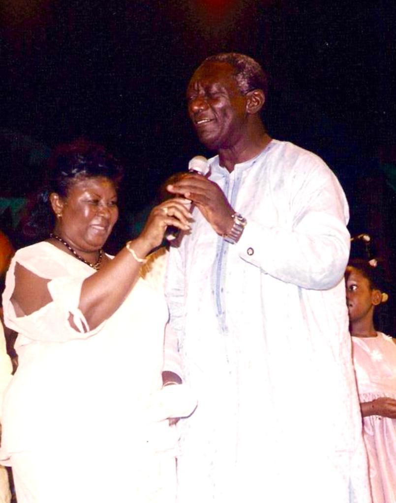
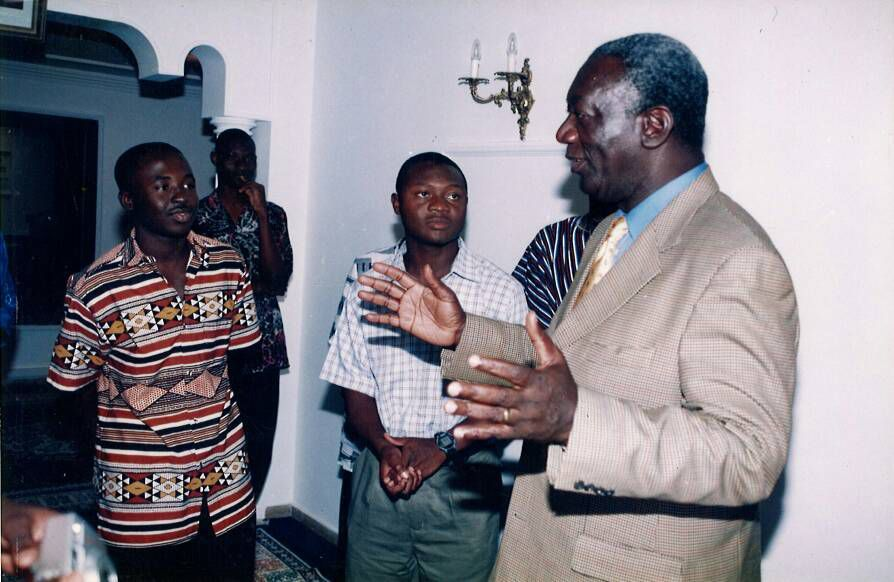
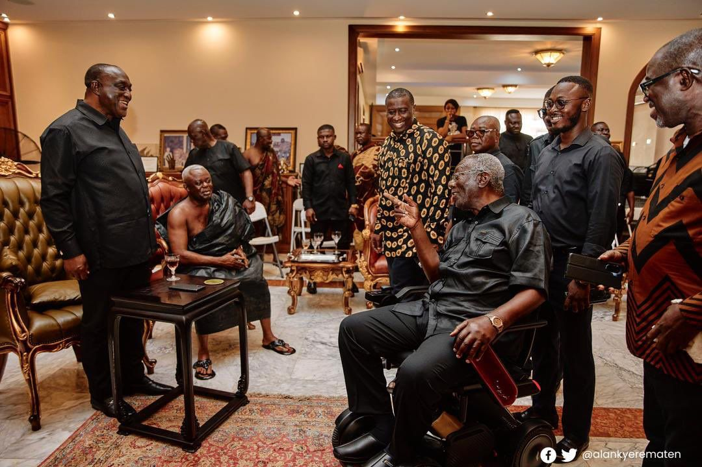
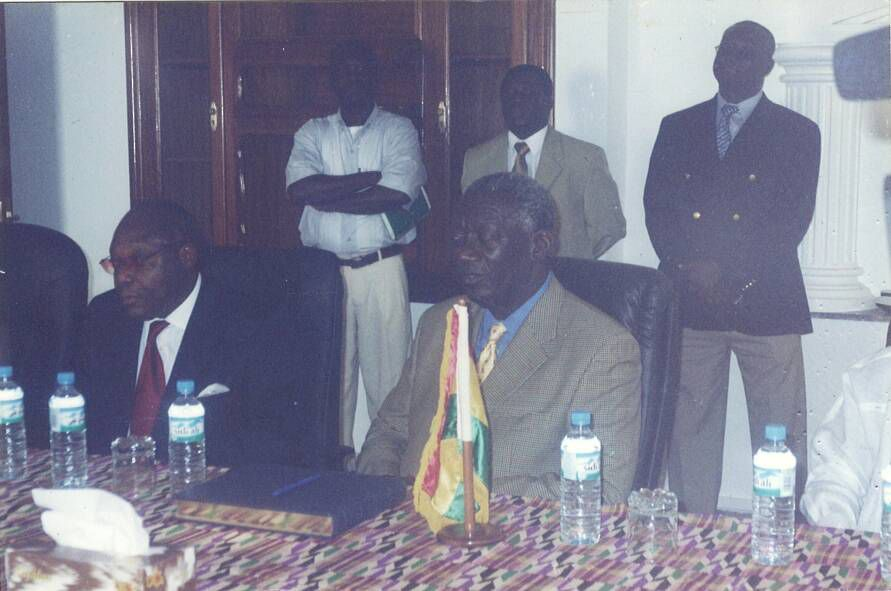

40% → 10%
Inflation Reduction
11M+
NHIS Beneficiaries
8,000km
Roads Rehabilitated
2007-2008
AU Chairmanship
Economic Reforms & Transformation

Macroeconomic Stabilization
- HIPC Completion (2004): Successfully exited the Heavily Indebted Poor Countries initiative, reducing Ghana's debt burden significantly
- Inflation Control: Reduced inflation from 40% in 2000 to single digits by 2008
- Currency Stability: Stabilized the Ghana Cedi and improved foreign exchange reserves
- Fiscal Discipline: Implemented sound fiscal policies that restored investor confidence
Private Sector Development
- Investment Climate: Created business-friendly policies that attracted foreign direct investment
- Banking Sector: Strengthened financial institutions and improved access to credit
- Trade Liberalization: Promoted free trade and regional economic integration
Social Programs & Human Development
National Health Insurance Scheme (NHIS)
- Universal Coverage: Launched in 2003, providing healthcare access to over 11 million Ghanaians by 2009
- Maternal Health: Significantly reduced maternal and infant mortality rates
- Rural Access: Extended healthcare services to previously underserved rural communities
Education & Youth Development
- School Feeding Programme: Fed 1.2 million children daily, improving enrollment and nutrition
- Capitation Grant: Eliminated school fees at the basic level, increasing access to education
- Infrastructure: Built thousands of classrooms and provided educational materials
- Youth Employment: Created job opportunities through various youth programs
Infrastructure & Governance

Physical Infrastructure
- Road Network: Rehabilitated over 8,000 kilometers of roads, improving connectivity
- Energy Sector: Expanded electricity access from 45% to 60% of the population
- Water & Sanitation: Improved access to clean water in rural and urban areas
- Telecommunications: Liberalized the telecom sector, leading to mobile phone revolution
Institutional Governance
- Democratic Institutions: Strengthened Parliament, Judiciary, and Electoral Commission
- Decentralization: Enhanced local government capacity and resource allocation
- Anti-Corruption: Established institutions to promote transparency and accountability
- Press Freedom: Maintained one of Africa's freest media environments
International Relations & Diplomacy

African Union Leadership
- AU Chairmanship (2007-2008): Led continental initiatives on peace, security, and development
- NEPAD Champion: Promoted the New Partnership for Africa's Development
- Regional Integration: Advanced ECOWAS goals and West African cooperation
Peace & Conflict Resolution
- Côte d'Ivoire Crisis: Mediated the post-election crisis, helping restore stability
- Liberia & Sierra Leone: Supported peace processes and democratic transitions
- Sudan Mediation: Contributed to peace efforts in various African conflicts
Global Partnerships
- US Relations: Strengthened ties with America, receiving significant development aid
- European Union: Enhanced cooperation through Economic Partnership Agreements
- China & Asia: Diversified partnerships while maintaining democratic values
Democratic Consolidation
Electoral Democracy
- Free & Fair Elections: Conducted transparent elections in 2004 and facilitated peaceful transition in 2008
- Multi-party System: Strengthened democratic competition and political pluralism
- Electoral Reforms: Improved voter registration and election management systems
Constitutional Governance
- Rule of Law: Upheld constitutional principles and judicial independence
- Human Rights: Protected civil liberties and fundamental freedoms
- Peaceful Transitions: Set precedent for democratic handovers in West Africa
Agricultural & Rural Development

Agricultural Modernization
- Fertilizer Subsidies: Provided subsidized fertilizers to smallholder farmers
- Irrigation Projects: Developed irrigation infrastructure to boost productivity
- Cocoa Sector: Reformed cocoa marketing, increasing farmer incomes
Rural Infrastructure
- Feeder Roads: Constructed rural roads to connect farming communities to markets
- Rural Electrification: Extended electricity to rural areas under the National Electrification Scheme
- Water Systems: Provided boreholes and water systems in rural communities
Honors & Recognition
Honorary Degrees & Academic Recognition
- Oxford University: Honorary Doctor of Civil Law (DCL) - 2007
- University of Ghana: Honorary Doctor of Laws (LLD) - 2010
- Kwame Nkrumah University: Honorary Doctor of Science - 2009
- University of Cape Coast: Honorary Doctor of Laws - 2008
- Multiple International Universities: Over 15 honorary doctorates from institutions worldwide
International Awards & Distinctions
- World Peace Prize (2011): Recognized for contributions to world peace and human rights
- Chatham House Prize (2005): For outstanding contribution to international relations
- African Leadership Award: Multiple recognitions for democratic leadership
- UN Global Compact Award: For promoting sustainable development
Continental & Regional Honors
- African Union Recognition: Distinguished service as AU Chairman
- ECOWAS Medal of Honor: For regional integration and peace efforts
- Mo Ibrahim Foundation: Chairman of Prize Committee for African Leadership
- African Development Bank: Special recognition for economic transformation
Lasting Impact & Recognition
Economic Legacy
Transformed Ghana from a heavily indebted country to a stable, growing economy that became a model for Africa.
Social Progress
Improved human development indicators through healthcare, education, and social protection programs.
Democratic Model
Established Ghana as a beacon of democracy in Africa, inspiring democratic movements across the continent.
International Stature
Elevated Ghana's global profile and established the country as a respected voice in international affairs.